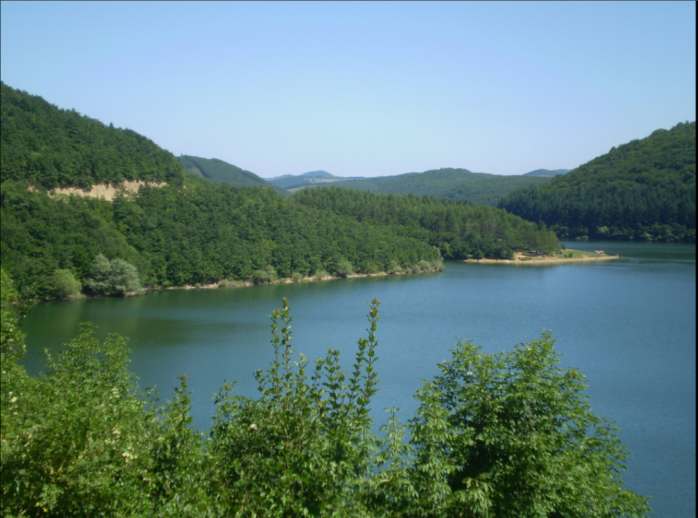

RUGOVA
Rugova Valley is located in the heart of Dukagjini, in north-western Kosovo.
It covers an area of 32.000 hectares. Its highest peak is Coursed Mountain, with an altitude of 2560 meters.
Among several characteristics that distinguish this valley, following are the most important ones
- -Bistrica River, which passes throughout 12 kilometers of the valley
- -Waterfalls that fall from a height of 30 meters
- -Two lakes at an altitude of 1 800 meters above sea level and
- -A number of caves
BREZOVICA
.jpg)
Brezovica is a unique ski resort located on the northwest part of Sharr Mountain at an altitude of 900 – 2,520 meters.
Favourable climate conditions make this region suitable for tourism, sport and recreation during the whole year.
The most well known hotels in Brezovica are: Hotel Narcis, Hotel Molika, Hotel Breza, Shtepija e Gurit and Woodland Hotel.
In addition, there are also rentable private houses where you can accommodate yourself.
PRIZREN


Albanian League of Prizren (Lidhja Shqipetare e Prizrenit) is a monument located in the center
of Prizren which became historically important since 1878 when the League of Prizren was organized there.
It was an assembly consisting of 300 representatives from all Albanian inhabited territories gathered
there to discuss about the foundation of an autonomic and unified Albanian state that would cover the territory of Prizren,
Shkoder, Manastir and Janine.
PRIZREN CASTLE
Prizren Castle is an old fortress situated the old part of the city of Prizren.
The fortress dates since the Roman years and lived until 1915, when it was destroyed during the First World War.
It was built to protect Prizren from foreign attacks and consists of a great number of underground tunnels.
Due to its long and interesting history, as well as the amazing view of the city, its ruins attract a great number of visitors nowadays.
SHARRI MOUNTAIN


Sharr Mountains is a mountain range that lies in the south-east part of Kosova.
They cover a territory of 60 km long and lie at an average altitude of 16-20 km. The Sharr Mountain consists of three main zones:
- The zone of Luboten and Brezovica,
- The central zone of Prizren, and
- The zone of Opoja and Gora.
MIRUSHA WATERFALLs

Mirusha Waterfalls is a chain of waterfalls found in the Mirusha River, situated on the south of the Gremnik Mountains;
on the way to Gjakova at an altitude of 572 meters. Its distance from the capital city is approximately one hour.
GJERAVICA
Gjeravica Peak (maja e Gjeravices), Kosovo’s highest peak, is located in the Western part of the country near the Albanian border.
At an unconfirmed altitude of 2,656 meters (8,714 feet), it is considered as the highest peak in the Bjeshkët e Nemuna (Accursed Mountains).
Prishtina(Pristina)
Prishtina (Pristina) is the largest city in the country and the capital of the Republic of Kosovo.
The municipality has 205.183 inhabitants (population date 31/12/2012).
DON’T MISS THESE PLACES IN PRISHTINA
- Janjeva old village
- Bakery Lumi (Furra Lumi) traditional food
- Papirun sandwich shop
- Soma book station - BAR
- Taverna Tirona Bar & Food
- Taunita Fish Restaurant
WHAT TO DO & SEE IN PRISHTINA (PRISTINA)
Germia National Park

Germia Park is a large beautiful park located in the east part of the city of Prishtina.
Its endless forests, well maintained paths,
fresh air, and the spitting distance from the city make it an attractive place to spend a nice quiet afternoon or weekend.
Batllava Lake
Batllava Lake is one of the biggest lakes in Kosova located in the eastern part of Kosova. It is fed by the Batlava River.
The lake has an area of 3.27 km² and a maximum depth of 48 meters.
Janjeva
Janjeva was known for its gold and silver mines and between the twelfth and fourteenth centuries the Republic of Dubrovnik
opened several mines there as well as the associated infrastructure, such as a foundry and winches for carrying the ore.
These mines have not functioned for centuries though it is said that a hunter’s dog once followed a rabbit from Janjevo/a to Gadime, about 10 kilometres away and entirely underground, presumably following the mines or a cave.
Stone Bridge – XIV century

Stone Bridge is situated in the ancient city of Vushtrri, it belongs to the mediavel period.
Stone bridge in Vushtrri has nine spans, build in the XIV century.
The Old Stone Bridge with nine arches is located to the west of the town of Vushtrria,
along the old Vushtrri – Mitrovicë road.
Marble Cave / Shpella e Gadimes

Marble cave is a cave made of marble cliffs formed by the metamorphosis of limestone. It is situated in the municipality of Lipljan.
The cave was discovered in 1966 by a citizen building his house and it was opened for tourists in 1976.
The cave is 1260 meters long, while the tourist path is around 500 meters long.